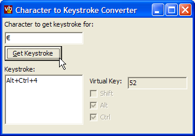

Character To Keyboard String Sample (11K)
Character To Keyboard String Sample (11K)
 27 Jun 2003
27 Jun 2003
First Posted

Convert a Character Code to a string describing the Keyboard Keys which must be pressed
Different keyboard layouts use different virtual key codes and shift combinations to represent character codes. This tip demonstrates how to convert a key code into the equivalent virtual key code and shift state, as well as how to provide the name of a virtual key on the keyboard.
There are two stages in converting a character into the keyboard equivalent. The first stage is to obtain the Keyboard Scan Code for the character, using the API call VkKeyScan. This provides the key's virtual key code and the shift state. Once that has been done, the virtual key code can be converted to the name of the key using the MapVirtualKey and GetKeyNameText functions.
Converting a Character to the Virtual Key and Shift State
The code below shows how this is achieved. First, the GetVersion function is called to determine whether the system is NT and has Unicode support or not. This is indicated by the high-bit of the return value being set. Then a suitable value is prepared for the VkKeyScan call. For Unicode systems this is an Integer value whereas ANSI systems use Byte values. Then the result of the call is an integer where the low-byte is the virtual key code and the high-byte is the shift state, made up from a ORed combination of the constants in VB's ShiftConstant values:
Private Declare Function GetVersion Lib "kernel32" () As Long
Private Declare Function VkKeyScan Lib "user32" Alias "VkKeyScanA" ( _
ByVal cChar As Byte) As Integer
Private Declare Function VkKeyScanW Lib "user32" ( _
ByVal cChar As Integer) As Integer
...
Dim bNt As Boolean
Dim iKeyCode As Integer
Dim b() As Byte
Dim iKey as integer
Dim vKey as KeyCodeConstants
Dim iShift As ShiftConstants
' Determine if we have Unicode support or not:
bNt = ((GetVersion() And &H80000000) = 0)
' Get the keyboard scan code for the character:
If (bNt) Then
b = sChar
CopyMemory iKey, b(0), 2
iKeyCode = VkKeyScanW(iKey)
Else
b = StrConv(sChar, vbFromUnicode)
iKeyCode = VkKeyScan(b(0))
End If
' Split into shift and key portions:
iShift = (iKeyCode And &HFF00&) \ &H100&
vKey = iKeyCode And &HFF&
Converting the Virtual Key Code to a Keyboard Name
To convert the key code, first the Unicode or ANSI version of MapVirtualKey is called. This returns a scan code which can be used to obtain the name of the key from the GetKeyNameText function. This function expects the scan code in a long value shifted to the high word and a pointer to an buffer which will hold the keyboard text name. In the Unicode world this needs to be a byte array with two bytes for each character in the buffer whereas in ANSI it is a pre-allocated VB string. The code to achieve this is shown below:
Dim lScanCode As Long
Dim sBuf As String
Dim lSize As Long
Dim b() As Byte
' Translate the virtual-key code into a scan code.
If (bNt) Then
lScanCode = MapVirtualKeyW(vKey, 0)
Else
lScanCode = MapVirtualKey(vKey, 0)
End If
' GetKeyNameText retrieves the name of a key (the scan code
' must be in bits 16-23):
lScanCode = lScanCode * &H10000
If (bNt) Then
ReDim b(0 To 512) As Byte
lSize = GetKeyNameTextW(lScanCode, VarPtr(b(0)), 256)
If (lSize > 0) Then
sBuf = b
sKeyName = Left$(sBuf, lSize)
End If
Else
sBuf = Space$(256)
lSize = GetKeyNameText(lScanCode, sBuf, 256)
sKeyName & Left$(sBuf, lSize)
End If
Using It
The sample application in the download wraps this function into a simple function within a module called GetKeyboardString. This takes a character as a VB string and returns a string with the keystroke, as well as populating two optional parameters vKey and iShift with the virtual key and shift flags.